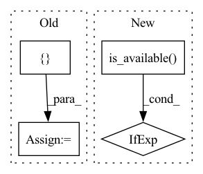

Pattern ID :41174

Before Change
print("{} model, anchors, and classes loaded.".format(self.model_path))
if self.num_classes <= 21:
self.colors = [(0, 0, 0), (128, 0, 0), (0, 128, 0), (128, 128, 0), (0, 0, 128), (128, 0, 128), (0, 128, 128),
(128, 128, 128), (64, 0, 0), (192, 0, 0), (64, 128, 0), (192, 128, 0), (64, 0, 128), (192, 0, 128),
(64, 128, 128), (192, 128, 128), (0, 64, 0), (128, 64, 0), (0, 192, 0), (128, 192, 0), (0, 64, 128), (128, 64, 12)]
else:
// 画框设置不同的颜色
hsv_tuples = [(x / self.num_classes, 1., 1.)
After Change
//-------------------------------//
self.net = pspnet(num_classes=self.num_classes, downsample_factor=self.downsample_factor, pretrained=False, backbone=self.backbone, aux_branch=False)
device = torch.device("cuda" if torch.cuda.is_available() else "cpu")
self.net.load_state_dict(torch.load(self.model_path, map_location=device), strict=False)
self.net = self.net.eval()
print("{} model, and classes loaded.".format(self.model_path))
In pattern: SUPERPATTERN
Frequency: 4
Non-data size: 4
Instances
Fragment ID: 116070659
Project Name: bubbliiiing/pspnet-pytorch
Commit Name: 45cb37376cd329f953cb649830de848c0fb0feaf
Time: 2021-11-09
Author: 47347516+bubbliiiing@users.noreply.github.com
File Name: pspnet.py
M Class Name: PSPNet
N Class Name: PSPNet
M Method Name: generate(1)
N Method Name: generate(1)
M Parent Class: object
N Parent Class: object
M File Name: pspnet.py
N File Name: pspnet.py
M Start Line: 72
M End Line: 96
N Start Line: 91
N End Line: 94
'>
Before Change
vocab_size = config.vocab_size
dataloader = DataLoader4Glue(task_name=task_name, batch_size = batch_size)
data_names = ["input_ids","token_type_ids","attention_mask","label_ids"]
dataloader_dev = DataLoader4Glue(task_name=task_name, batch_size = batch_size, datatype="dev")
After Change
def finetune(args):
cuda_condition = torch.cuda.is_available()
device = torch.device("cuda:%d"%args.gpu_id if cuda_condition else "cpu")
task_name = args.task_name
if task_name in ["sst-2","cola", "mrpc"]:
num_labels = 2
'>
Fragment ID: 116070663
Project Name: hsword/hetu
Commit Name: 127e9970d0ad0364767dd1b1946980f58f7b7376
Time: 2022-01-18
Author: 49988457+AFDWang@users.noreply.github.com
File Name: examples/nlp/bert/test_glue_pytorch_bert.py
M Class Name: AnonimousClass
N Class Name: AnonimousClass
M Method Name: finetune(1)
N Method Name: finetune(0)
M Parent Class:
N Parent Class:
M File Name: examples/nlp/bert/test_glue_pytorch_bert.py
N File Name: examples/nlp/bert/test_glue_pytorch_bert.py
M Start Line: 72
M End Line: 130
N Start Line: 60
N End Line: 81
'>
Before Change
// Load data
dataset = MNIST(root="./data", download=True)
DATA_SPLIT = [50000, 10000]
train_data, test_data = random_split(dataset.data.float().unsqueeze(dim=1), DATA_SPLIT)
train_label, test_label = random_split(dataset.targets, DATA_SPLIT)
train_loader = DataLoader(dataset=MNISTDataset(train_data, train_label),
After Change
def main():
device = torch.device("cuda" if torch.cuda.is_available() else "cpu")
// Load model
model = CapsNet().to(device)
criterion = CapsuleLoss()
'>
Fragment ID: 116070662
Project Name: riroaki/capsnet
Commit Name: 408b1e77f4e40589def9c313c0b11beaa88f2108
Time: 2020-03-08
Author: aki@akideMacBook-Pro.local
File Name: main.py
M Class Name: AnonimousClass
N Class Name: AnonimousClass
M Method Name: main(0)
N Method Name: main(0)
M Parent Class:
N Parent Class:
M File Name: main.py
N File Name: main.py
M Start Line: 25
M End Line: 75
N Start Line: 12
N End Line: 75
'>
Before Change
vocab_size = config.vocab_size
dataloader = DataLoader4Glue(task_name=task_name, batch_size = batch_size, datatype="dev")
data_names = ["input_ids","token_type_ids","attention_mask","label_ids"]
start_model = "random"
After Change
print("Saved model to %s."%(save_path+save_file))
def validate(args):
cuda_condition = torch.cuda.is_available()
device = torch.device("cuda:%d"%args.gpu_id if cuda_condition else "cpu")
task_name = args.task_name
if task_name in ["sst-2","cola", "mrpc"]:
num_labels = 2
'>
Fragment ID: 116070661
Project Name: hsword/hetu
Commit Name: 127e9970d0ad0364767dd1b1946980f58f7b7376
Time: 2022-01-18
Author: 49988457+AFDWang@users.noreply.github.com
File Name: examples/nlp/bert/test_glue_pytorch_bert.py
M Class Name: AnonimousClass
N Class Name: AnonimousClass
M Method Name: validate(1)
N Method Name: validate(0)
M Parent Class:
N Parent Class:
M File Name: examples/nlp/bert/test_glue_pytorch_bert.py
N File Name: examples/nlp/bert/test_glue_pytorch_bert.py
M Start Line: 187
M End Line: 224
N Start Line: 176
N End Line: 185